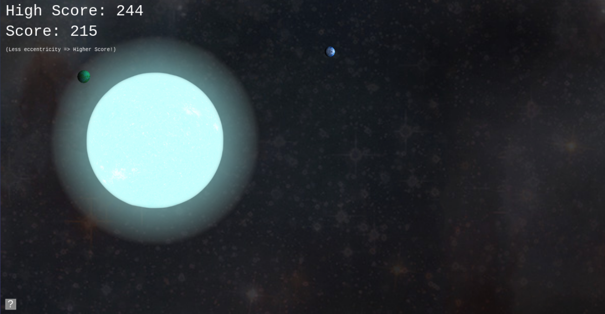
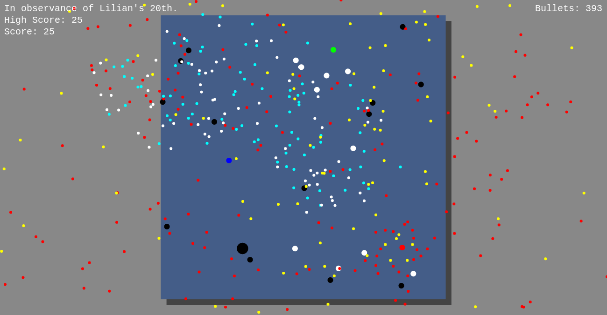
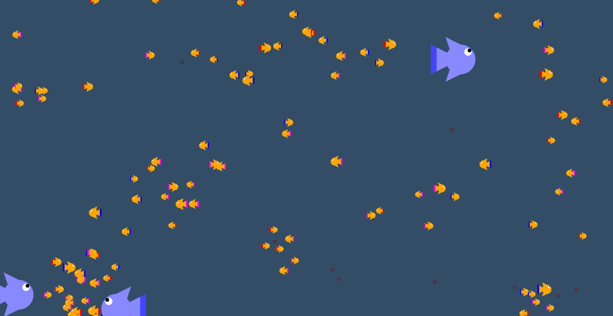
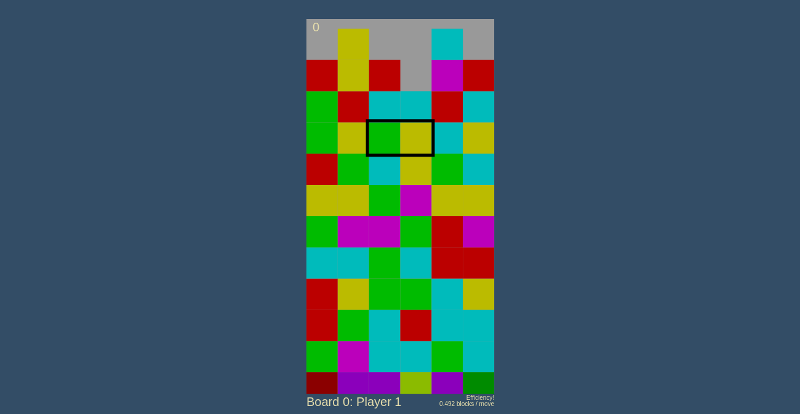

Side Projects
SpaceBox (collaboration)
SpaceBox was created from a Rice Hackathon effort by Haihao Liu, Osmond Wen, Kevin Guo, and me! (All current Rice students.) It's an n-body gravity simulator with scoring mechanics. Start by clicking anywhere and holding the mouse down to create a star. Then click, hold, and drag to throw a planet into orbit! The lower the eccentricity of an orbit you throw, the higher your score for that planet! Click on the image below to play.
Loch Best Monster game
Loch Best Monster, created as a birthday present for someone special, is inspired by the Japanese bullet-hell genre of video games. Use the mouse to dodge fishing ships and bullets, while chasing blue dots (fish). Special ships come out at multiples of 25 points ... if you can get there! Click on the image below to play.
Aquarium Simulator
My first major project ever, Aquarium Simulator was an exploration into main loops, deterministic time-steps, and object-oriented programming. Click anywhere to drop donuts, and watch as the fish and sharks interact with it and each other. Click on the image below to play.
Tetris Attack Clone
A collaborative project with my younger brother, Ryan, Tetris Attack Clone is a reimagining of the classic Nintendo game series, Puzzle League. Tetris Attack is fiercely-beloved by a small community, and we hoped to bring attention to this relatively unknown series. Click on the image below to play.
The Beer Bike Game
In all honesty, the Beer Bike Game has no place being on a supposedly "professional" website, but it comes with a funny story. While taking a break during my freshman-year Rice Hackathon, I created the Beer Bike Game and filled it with crass humor to vent my frustrations. Because the Beer Bike Game predates my foray into GitHub hosting, the link was difficult to access until I linked to it here! Not recommeded for the faint of heart. To access the game from the source code, you will need to click on the play button on the top right corner. Click on the image below to play.